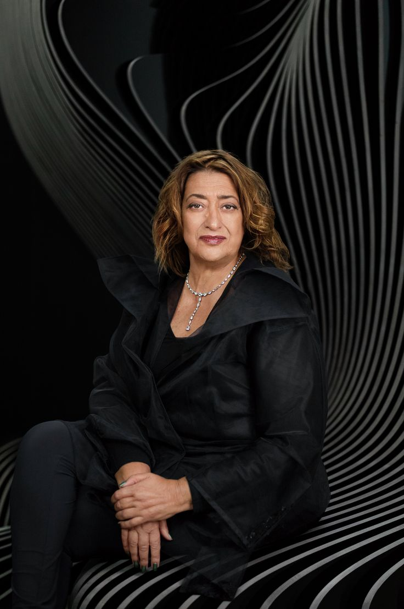
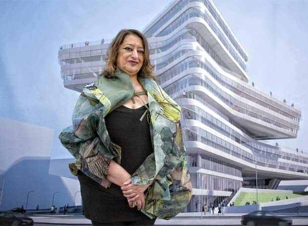

أولاً: بطاقة التعرف والصورة الشخصية

الاسم الكامل: زها محمد حسين حديد (Zaha Hadid)
تاريخ الميلاد والوفاة: 1950 - 2016
مجال التميز: الهندسة المعمارية والتصميم التفكيكي
ثانياً: أبرز الأعمال والتصاميم
اشتهرت بتصاميمها الحرة والمستقبلية التي تكسر القواعد الهندسية التقليدية، ومن أعمالها:
- تصميم مركز حيدر علييف في باكو، الحائز على جائزة تصميم العام.
- تصميم دار أوبرا غوانزو في الصين ومحطة قطار نورد بارك في النمسا.
- تصميم مركز الألعاب المائية لأولمبياد لندن 2012.
- ترك إرث يتجاوز 950 مشروعاً هندسياً في 44 دولة حول العالم.

ثالثاً: التحديات والعقبات التي واجهتها
واجهت زها حديد جداراً من الرفض في مسيرتها المبكرة قبل أن تنال اعتراف العالم الباهر:
- مقاومة الأفكار التقليدية: وُصفت تصاميمها الجريئة في البداية بأنها "خيالية" و"غير قابلة للتنفيذ على أرض الواقع".
- صناعة يهيمن عليها الرجال: كافحت لسنوات طويلة جداً لإثبات جدارتها ومنافستها للشركات العالمية في مجال كان حكراً على الرجال.
- إلغاء بعض المشاريع: تعرضت لانتكاسات كبرى مثل إلغاء مشروعها الفائز لدار أوبرا كارديف في بريطانيا نتيجة ضغوط سياسية وإقليمية.
رابعاً: الإنجازات التاريخية والجوائز
- أول امرأة في التاريخ تفوز بـ جائزة بريتزكر للهندسة المعمارية (والتي تعد بمثابة نوبل للمعماريين) عام 2004.
- حصلت على وسام القائد من الإمبراطورية البريطانية تقديراً لإنجازاتها الفنية.
- أول امرأة تنال الميدالية الذهبية الملكية من المعهد الملكي للمعماريين البريطانيين (RIBA).